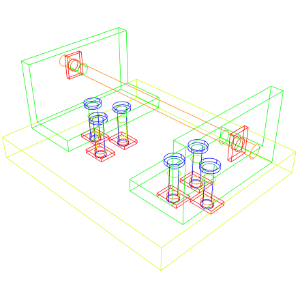
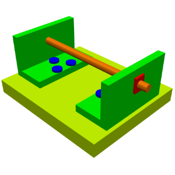
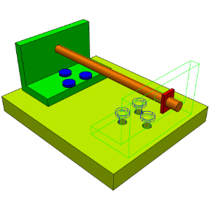
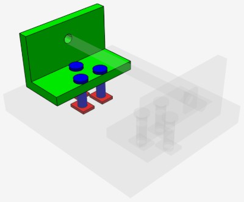
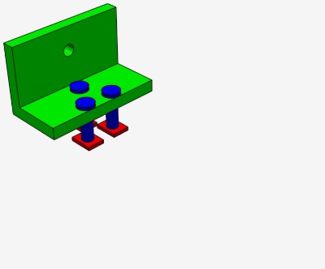

ModelPrs_Scene encapsulates a scene, connects with a viewport, and manages object display and interactive selection. One viewport only can be attached to a scene.
Once a scene graph has been constructed (see Creating a scene graph) its top node can be added to a scene as a new root:
A root node can be removed from the scene using ModelPrs_Scene::RemoveRoot().
To enforce visual update of the scene in the attached viewport, the ModelPrs_Scene::Update() method must be called.
Updating the scene can be time-consuming and therefore should be delayed until changes to the underlying scene node’s data have been applied. For instance, the following example demonstrates multiple geometrical changes and single scene update:
An object on a scene can be displayed in various display modes, for instance:

Wireframe display mode |

Shaded display mode |

Mixed display mode (Shaded with boundaries & Wireframe) |
A display mode can be defined per each scene node using ModelPrs_SceneNode::SetDisplayMode(). See also Node attributes inheritance to check how distinct display modes apply in the scene graph.
The following code snippet demonstrates how to create a mixed shading and wireframe display modes:
A hidden scene node (but not removed from the scene) can be either fully hidden or displayed as semi-transparent:

Ghost hidden visibility mode |

Hidden visibility mode |
This behavior is controlled with ModelPrs_SceneNode::SetVisibilityMode().
Objects are selected upon mouse clicks (tap events on touch screens) or via ModelPrs_SelectionManager interface. Upon selection selected objects are highlighted on a screen. Selection on entire 3D scene can be enabled/disabled using the SetSelectionEnabled() of the viewport.
The scene provides ModelPrs_SelectionManager object to handle and to manage selection. To handle selection events a subclass of ModelPrs_SelectionChangesObserver must be defined with the redefined ModelPrs_SelectionChangesObserver::SelectionChangedByScene() and ModelPrs_SelectionChangesObserver::SelectionChangedByManager() methods and registered in the manager as follows:
The manager will notify about selection events using a call-back mechanism (your observer object).
The difference between SelectionChangedByScene() and SelectionChangedByManager() methods is that the first is invoked when the selection event source is a mouse click in the viewport and the second is invoked when you change the selection using ModelPrs_SelectionManager methods.
To manage selection in your code you can use Select(), Deselect() and DeselectAll() methods of ModelPrs_SelectionManager.
A selection object encapsulates the scene node which has been selected/deselected and additionally in the case of B-Rep representation, the B-Rep subshapes. To access this data a subclass of ModelPrs_SelectionVisitor must be sent to selection's Accept() method:
Refer to Selection Handling Example
A selection mode is represented by ModelPrs_SelectionMode enumeration and can be specified for each scene node with ModelPrs_SceneNode::SetSelectionMode(). For instance:
ModelPrs_SelectionMode enumeration values are represented with binary flags and thus selection modes can be combined with each other as follows:
Values from ModelPrs_SM_Vertex to ModelPrs_SM_Solid apply for B-Rep representations only (and are ignored for polygonal representations):
When combining selection modes of the same dimension, the value representing a finer type will dominate. For instance, when combining edge and wire selection the former will dominate (because any wire consists of edges).
The following list explains dominating modes in such combinations:
When selecting B-Rep edges and faces, additional filters can be specified in order to restrict selection to specific geometries. For instance, to restrict selection of faces lying on planar surfaces (such as real planes or planar NURBS-surfaces), the following filter can be specified:
ModelPrs_SelectionFilterType enumeration values are represented by binary flags and thus several filters can be combined. The following example demonstrates how to limit selection to circular edges or surfaces of revolution (e.g. cylinders or cones):
Selection filters are useful when you interact with the scene to create Measurements.
Refer to Measurements Example
A 3D viewport can support hover - highlighting a selectable object when mouse coursor moves over it. This behavior is controlled with the method SetHighlightingEnabled() of a respective viewport.